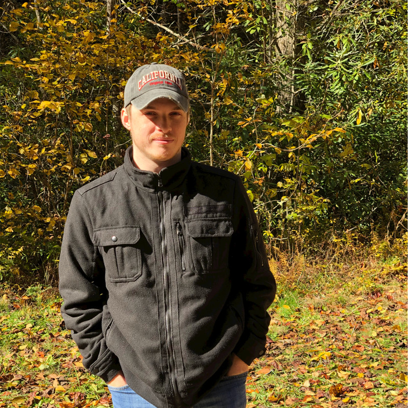

<div>
  <div class="about-page-container">
    
    <div class="about-page__title">About Daniel</div> <br />
    <p class="about-page__text">
      Daniel is both a student and enthusiast of the world of computing. Having spent the past 5 years studying and
      working in IT, he has learned that if a problem exists - it can most likely be solved using technology. Nothing is
      more rewarding to me than solving a complex problem through critical analysis and implementation of a solution. He
      will always take the opportunity to learn something new, because in the world of IT, knowledge is power.
    </p>
    <br />
    <div>
      <h2>EXPERIENCE</h2>
    </div>
    <p class="about-page__text">
      Arylessence, Network Administrator February 2019 - Present <br />
      • Deploy new technology in a 15+ year old IT environment while maintaining productivity<br />
      • Plan technology deployments to align with company and departmental goals<br />
      • Upgrade users from Office 2003 and 2010 to O365<br />
      • Mass deploy Windows 10 64-bit in a Windows 7 32-bit environment<br />
      • Migrate from on-prem exchange server to cloud based Outlook mail server<br />
      • Build current gen solutions for Excel 2003 based database and automation system<br />
      • Design and upgrade DOS/Access 2003 based application systems with new web-based solution<br />
      • Replace multipurpose servers with dedicated SQL, Oracle, and Hyper-V clusters<br />
      • Complete reorganization of IP scheme<br />
      • Network architecture remodel from flat network to Meraki-based layered network<br /><br />

      Park N’ Fly, IT Intern June 2018 – February 2019<br />
      • Provide employees with IT troubleshooting and problem solving<br />
      • Maintain network and help with restructuring<br />
      • Use RDP to troubleshoot remote employees<br />
      • Use RDP to update and install new software in remote locations<br />
      • Deploying and Managing CentOS Linux-based server for local IT web applications<br />
      • Install and Configure samba server on CentOS for Windows server integration<br />
      • Monitor network through Sumo Logic and Meraki Dashboard<br />
      • Repair and upgrade hardware such as laptops and desktops<br />
      • Write simple web applications to increase productivity in IT department<br /><br />
    </p>

    <h2>TECHNICAL SKILLS</h2>
      <p class="about-page__text">• Office 365 Applications and Integration<br />
      • Windows and Linux OS Management and Imaging<br />
      • Routing and Switching in a Business Environment<br />
      • Network Security and Management<br /><br />
    </p>

    <h2>
      CONTACT INFO
    </h2>
    <p class="about-page__text">For business inquiries, email daniel@cookdev.org.</p>
    <a class="about-page__text" href="https://www.linkedin.com/in/daniel-cook-718259159">Daniel's LinkedIn</a>
  </div>
</div>
